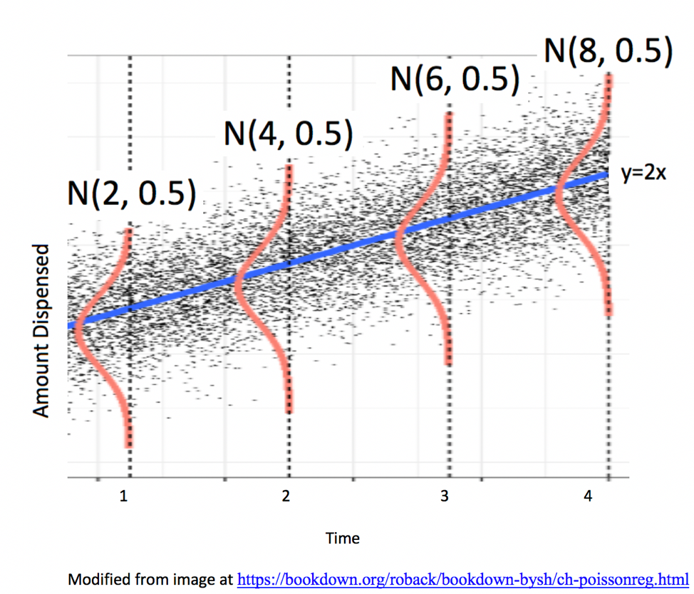
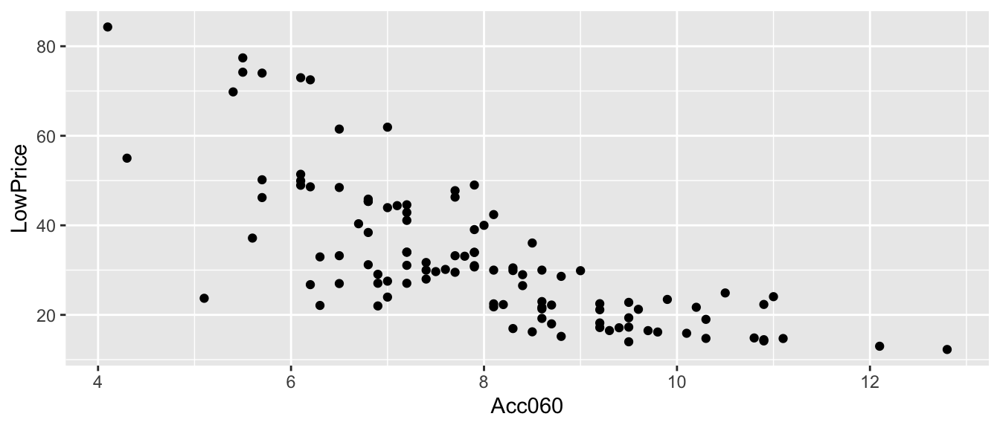

Chapter 5 The Normal Error Linear Regression Model
5.1 Standard Error Formulas and Theory-Based Intervals
5.1.1 Standard Error for the Mean
- Standard error is the standard deviation of the distribution of a statistic, across many samples of the given size. This is different than the sample standard deviation, which pertains to the amount of variability between individuals in the sample.

Standard Deviation:
sd(FloridaLakes$AvgMercury)## [1] 0.3410356The standard deviation in mercury levels between individual lakes is 0.341 ppm.

Standard Error for Mean:
SE <- sd(Lakes_Bootstrap_Results_Mean$MeanHg); SE## [1] 0.04653932The standard deviation in the distribution for mean mercury levels between different samples of 53 lakes is approximately 0.0465393 ppm.
5.1.2 Standard Error for the Mean (continued)
When the statistic is the sample mean \(\bar{x}\), the standard error is given by:
\[ SE(\bar{x})=\frac{s}{\sqrt{n}}, \]
where \(s=\sqrt{\frac{\displaystyle\sum_{i=1}^n(y_i-\hat{y}_i)^2}{(n-1)}}\) represents the sample standard deviation and \(n\) represents the sample size.
sd(FloridaLakes$AvgMercury)/sqrt(53)## [1] 0.04684485This is an approximation of the standard deviation in the distribution of sample means for samples of size 53.
5.1.3 Standard Error in R Output for Lakes
summary(lm(data=FloridaLakes, AvgMercury~1))##
## Call:
## lm(formula = AvgMercury ~ 1, data = FloridaLakes)
##
## Residuals:
## Min 1Q Median 3Q Max
## -0.48717 -0.25717 -0.04717 0.24283 0.80283
##
## Coefficients:
## Estimate Std. Error t value Pr(>|t|)
## (Intercept) 0.52717 0.04684 11.25 0.00000000000000151 ***
## ---
## Signif. codes: 0 '***' 0.001 '**' 0.01 '*' 0.05 '.' 0.1 ' ' 1
##
## Residual standard error: 0.341 on 52 degrees of freedom5.1.4 Standard Error for Difference in Means

Standard Error for Mean:
SE <- sd(NS_Lakes_Bootstrap_Results$b1); SE## [1] 0.095855895.1.5 Standard Error for Difference in Means (cont.)
When the statistic is the sample mean \(\bar{x}_1-\bar{x}_2\), the standard error is given by:
\[ SE(\bar{x})=s\sqrt{\frac{1}{n_1}+\frac{1}{n_2}}, \]
where \(s=\sqrt{\frac{\displaystyle\sum_{i=1}^n(y_i-\hat{y}_i)^2}{(n-2)}}\) represents the sample standard deviation and \(n\) represents the sample size.
- The standard error estimate \(s\sqrt{\frac{1}{n_1+n_2}}\) is called a "pooled" estimate since it combines information from all groups to estimate \(\sigma\). When there is reason to believe standard deviation differs between groups, an "unpooled" standard error estimate of \(\sqrt{\frac{s_1^2}{n_0}+\frac{s_2^2}{n_2}}\), where \(s_g\) represents the standard deviation for group \(g\)
5.1.6 Standard Error in R Output for Lakes Difference
summary(Lakes_M)##
## Call:
## lm(formula = AvgMercury ~ Location, data = FloridaLakes)
##
## Residuals:
## Min 1Q Median 3Q Max
## -0.65650 -0.23455 -0.08455 0.24350 0.67545
##
## Coefficients:
## Estimate Std. Error t value Pr(>|t|)
## (Intercept) 0.42455 0.05519 7.692 0.000000000441 ***
## LocationS 0.27195 0.08985 3.027 0.00387 **
## ---
## Signif. codes: 0 '***' 0.001 '**' 0.01 '*' 0.05 '.' 0.1 ' ' 1
##
## Residual standard error: 0.3171 on 51 degrees of freedom
## Multiple R-squared: 0.1523, Adjusted R-squared: 0.1357
## F-statistic: 9.162 on 1 and 51 DF, p-value: 0.0038685.1.7 Standard Error for Slope and Intercept in SLR
Standard Error for Slope of Regression Line:
\[ SE(b_1)=\sqrt{\frac{s^2}{\sum(x_i-\bar{x})^2}} \]
Standard Error for Intercept of Regression Line:
\[ SE(b_0)=s\sqrt{\frac{1}{n}+\frac{\bar{x}^2}{\sum(x_i-\bar{x})^2}} \]
where \(s=\sqrt{\frac{\displaystyle\sum_{i=1}^n(y_i-\hat{y}_i)^2}{(n-2)}}\) represents the sample standard deviation and \(n\) represents the sample size.
These standard errors pertain to the variability in slope and intercept of regression line between samples of 110 cars.
5.1.8 Standard Error for Slope and Intercept in SLR (cont.)
s <- summary(Cars_M_A060)$sigma
xbar <- mean(Cars2015$Acc060)
SSx <- sum((Cars2015$Acc060-xbar)^2)SE for Slope:
sqrt(s^2/SSx)## [1] 0.6234005s*sqrt(1/110 + xbar^2/SSx)## [1] 5.0523255.1.9 R Output for Cars Slope
summary(Cars_M_A060)##
## Call:
## lm(formula = LowPrice ~ Acc060, data = Cars2015)
##
## Residuals:
## Min 1Q Median 3Q Max
## -29.512 -6.544 -1.265 4.759 27.195
##
## Coefficients:
## Estimate Std. Error t value Pr(>|t|)
## (Intercept) 89.9036 5.0523 17.79 <0.0000000000000002 ***
## Acc060 -7.1933 0.6234 -11.54 <0.0000000000000002 ***
## ---
## Signif. codes: 0 '***' 0.001 '**' 0.01 '*' 0.05 '.' 0.1 ' ' 1
##
## Residual standard error: 10.71 on 108 degrees of freedom
## Multiple R-squared: 0.5521, Adjusted R-squared: 0.548
## F-statistic: 133.1 on 1 and 108 DF, p-value: < 0.000000000000000225.1.10 \(\text{SE}(b_j)\) in MLR
When there is more than one explanatory variable, estimates of regression coefficients and their standard errors become more complicated, and involves inversion of a "design matrix."
This link provides additional information on the topic. Understanding it will likely require experience with linear algebra (i.e MATH 250).
Estimation in MLR goes beyond the scope of this class. For MLR in this class, you may use the estimates and standard errors reported in the R output, without being expected to calculate them yourself.
5.1.11 R Output for SE's in MLR
summary(Bear_M_Age_Sex_Int)##
## Call:
## lm(formula = Weight ~ Age * Sex, data = Bears_Subset)
##
## Residuals:
## Min 1Q Median 3Q Max
## -207.583 -38.854 -9.574 23.905 174.802
##
## Coefficients:
## Estimate Std. Error t value Pr(>|t|)
## (Intercept) 70.4322 17.7260 3.973 0.000219 ***
## Age 3.2381 0.3435 9.428 0.000000000000765 ***
## Sex2 -31.9574 35.0314 -0.912 0.365848
## Age:Sex2 -1.0350 0.6237 -1.659 0.103037
## ---
## Signif. codes: 0 '***' 0.001 '**' 0.01 '*' 0.05 '.' 0.1 ' ' 1
##
## Residual standard error: 70.18 on 52 degrees of freedom
## (41 observations deleted due to missingness)
## Multiple R-squared: 0.6846, Adjusted R-squared: 0.6664
## F-statistic: 37.62 on 3 and 52 DF, p-value: 0.00000000000045525.1.12 Theory-Based Confidence Intervals
If the sampling distribution for a statistic is symmetric and bell-shaped, we can obtain an approximate 95% confidence interval using the formula:
\[ \text{Statistic} \pm 2\times{\text{Standard Error}}, \]
where the standard error is calculated by formula, rather than via bootstrap simulations.
5.1.13 Comparison of CI Methods
We've now seen 3 different ways to obtain confidence intervals based on statistics, calculated from data.
The table below tells us what must be true of the sampling distribution for a statistic in order to use each technique.
| Technique | No Gaps | Bell-Shaped | Known Formula for SE |
|---|---|---|---|
| Bootstrap Percentile | x | ||
| Bootstrap Standard Error | x | x | |
| Theory-Based | x | x | x |
5.1.14 When to use Each CI Method Ex.1
Mean mercury level for all Florida lakes:

It is appropriate to use any of the 3 CI methods since
- sampling distribution is symmetric and bell-shaped with no gaps
- there is a known formula to calculate standard error for a sample mean
The methods should all produce similar results.
5.1.15 When to use Each CI Method Ex.2
Slope of regression line in cars example

It is appropriate to use any of the 3 CI methods since
- sampling distribution is symmetric and bell-shaped with no gaps
- there is a known formula to calculate standard error for a slope of regression line
The methods should all produce similar results.
5.1.16 When to use Each CI Method Ex.3
Standard deviation of mercury level in Florida Lakes
- It is appropriate to use the bootstrap percentile, and bootstrap standard error CI's since the sampling distribution is symmetric and bell-shaped.
- We cannot use the theory-based interval because we do not have a formula to calculate the standard error, associated with an estimate of \(\sigma\).
5.1.17 When to use Each CI Method Ex.4
Regression slope in bears age model
- It is appropriate to use the bootstrap percentile CI, since the sampling distribution has no gaps.
- Since the distribution is not symmetric, it would be inappropriate to use the bootstrap standard error, or theory-based confidence interval (Although R does calculate a SE, using it to produce a CI would be unreliable).
5.1.18 When to use Each CI Method Ex.5
Median mercury level in Florida Lakes

- Since the distribution has gaps, and is not symmetric, none of these procedures are appropriate.
- In some cases (usually with larger sample size), a bootstrap distribution for the median will not have these gaps. In these situations, the percentile bootstrap interval would be appropriate. If the distribution is bell-shaped, the standard error method would also be appropriate. We would not be able to use the theory-based approach, because there is no formula for the standard error associated with a sample median.
5.2 The Normal Error Regression Model
5.2.1 Symmetric, Bell-Shaped Distributions
Notice that when we used simulation to approximate the sampling distributions of statistics, many (but not all) of these turned out to be symmetric and bell-shaped.

5.2.2 Normal Distribution
Symmetric and bell-shaped sampling distributions can be approximated with the normal distribution.
A normal distribution is defined by two parameters:
- \(\mu\) representing the center of the distribution
- \(\sigma\) representing the standard deviation
This distribution is denoted \(\mathcal{N}(0, \sigma)\).
Note that for standard deviation \(\sigma\), \(\sigma^2\) is called the variance. Some books denote the normal distribution as \(\mathcal{N}(0, \sigma^2)\), instead of \(\mathcal{N}(0,\sigma)\).
5.2.3 t-distribution
A t-distribution is a symmetric, bell-shaped curve, with thicker tails (hence more variability), than a \(\mathcal{N}(0,1)\) distribution.
gf_dist("t", df=3, color = ~ "3 df", kind = "density") %>%
gf_dist("t", df=10, color = ~ "10 df", kind = "density") %>%
gf_dist("t", df=20, color = ~ "20 df", kind = "density") %>%
gf_dist("t", df=30, color = ~ "30 df", kind = "density") %>%
gf_dist("norm", color = ~ "N(0,1)", kind = "density") + xlim(c(-3,3))5.2.4 Normal Error Regression Model
In regression, it is common to assume the following:
The expected value of the response variable is a function of one or more explanatory variables. Often, this function is assumed to be linear.
Individual observations vary from their expected value according to a normal distribution.
The first part is often referred to as signal and the second as noise.
This can be written mathematically as:
\(Y_i = \beta_0 + \beta_1X_{i1}+ \ldots + \beta_pX_{ip} + \epsilon_i\), with \(\epsilon_i\sim\mathcal{N}(0,\sigma)\).
5.2.5 Example: Ice Cream Dispensor
Suppose an ice cream machine is manufacturered to dispense 2 oz. of ice cream per second, on average, but that the actual amount dispensed each time it is used varies due to factors such as
- force applied to dispensor
- temperature
- build-up of ice cream
- other factors
Suppose that the actual amount dispensed varies from its expectation according to a \(\mathcal{N}(0,0.5)\) distribution.

5.2.6 Model for Ice Cream Dispensor
True Model:
\[ Y_i = 2X_i+\epsilon_i, \text{ where } \epsilon_i \sim \mathcal{N}(0,0.5) \]
where
- \(y_i\) represents amount dispesed for person \(i\),
- \(x_i\) represents time person \(i\) holds dispensor
- \(\epsilon_i\) is the error term, representing variation due to unobservable factors
5.2.7 Simulating Data from a Model
Suppose that 15 people use the icecream machine, taking the following amounts of time in seconds:
set.seed(10082020)
time <- c(1, 1.2, 1.5, 1.8, 2.1, 2.1, 2.3, 2.5, 2.6, 2.8, 2.9, 2.9, 3.1, 3.2, 3.6)The code below simulates the amount of icecream dispensed for each person.
amount <- 2*time + rnorm(15, 0, 0.5)
Icecream1 <- data.frame(time, amount)kable(t(round(Icecream1, 2)))| time | 1.00 | 1.20 | 1.50 | 1.80 | 2.10 | 2.10 | 2.30 | 2.50 | 2.60 | 2.80 | 2.90 | 2.90 | 3.1 | 3.20 | 3.60 |
| amount | 2.23 | 1.91 | 3.58 | 3.57 | 4.37 | 3.27 | 4.65 | 4.63 | 4.74 | 5.77 | 5.21 | 5.92 | 6.2 | 7.07 | 7.25 |
5.2.8 Scatterplot for Ice Cream Sample Data

The red line represents the expectation function \(E(Y_i) = 2X_i\).
5.2.9 What We Actually Get to See

5.2.10 What We Actually Get to See (cont.)
The blue line represents the least squares regression line.
5.2.11 Estimation in Ice Cream Example
Assume we know that the model has the form \(Y_i=\beta_0 + \beta_1X + \epsilon_i\), where \(\epsilon_i \sim \mathcal{N}(0,\sigma)\), but we do not know the values of \(\beta_0\), \(\beta_1\), or \(\sigma\).
- \(b_0\) and \(b_1\) are calculated by minimizing SSR, and serve as estimates of \(\beta_0\) and \(\beta_1\)
- are calculated by minimizing SSR, and serve as estimates of \(\beta_0\) and \(\beta_1\)
- \(s=\sqrt{\frac{\displaystyle\sum_{i=1}^n(y_i-\hat{y}_i)^2}{(n-(p+1))}} = \sqrt{\frac{\displaystyle\sum_{i=1}^n(y_i-\hat{y}_i)^2}{(n-2)}} = \sqrt{\frac{\text{SSR}}{n-2}}\) is an estimate of \(\sigma\).
5.2.12 Ice Cream Model R Output
IC_Model <- lm(data=Icecream1, lm(amount~time))
summary(IC_Model)##
## Call:
## lm(formula = lm(amount ~ time), data = Icecream1)
##
## Residuals:
## Min 1Q Median 3Q Max
## -0.8645 -0.3553 0.0685 0.2252 0.6963
##
## Coefficients:
## Estimate Std. Error t value Pr(>|t|)
## (Intercept) -0.1299 0.3968 -0.327 0.749
## time 2.0312 0.1598 12.714 0.0000000104 ***
## ---
## Signif. codes: 0 '***' 0.001 '**' 0.01 '*' 0.05 '.' 0.1 ' ' 1
##
## Residual standard error: 0.4527 on 13 degrees of freedom
## Multiple R-squared: 0.9256, Adjusted R-squared: 0.9198
## F-statistic: 161.6 on 1 and 13 DF, p-value: 0.000000010425.2.13 Ice Cream Model: Estimated Regression Equation
The estimated regression equation is \(E(Y_i) = -0.1299087 + 2.0312489\times X_i\)
- The estimate \(b_0 = -0.1299087\) is close to the true value of \(\beta_0 = 0\)
- The estimate \(b_1 = 2.0312489\) is close to the true value of \(\beta_1 = 2\).
The estimate \(s = 0.4527185\) is close to the true value of \(\sigma = 0.5\).
Remember that in a real situation, we would not know the values of \(\beta_0\) and \(\beta_1\), or \(\sigma\) and would have only estimates \(b_0\) and \(b_1\), and \(s\).
5.2.14 What We Actually Get to See

5.2.15 What We Actually Get to See (cont.)

The blue line represents the least squares regression line.
5.2.16 True and Estimated Regression Line
The red line represents the true expectation function \(E(\text{Amount}) = 0 + 2\times\text{Time}\).
The blue line represents the estimated regression line \(\widehat{\text{Amount}} = -0.1299087 + 2.0312489\times\text{Time}\)
5.2.17 Second Sample
The red line represents the expectation function \(E(Y_i) = 2X_i\).
Estimated Regression Equation: \(\widehat{\text{Amount}} = -0.6196117 + 2.1936879\times \text{Time}\)
Estimate of \(\sigma\): 0.4423186
5.2.18 Third Sample
The red line represents the expectation function \(E(Y_i) = 2X_i\).
Estimated Regression Equation: \(\widehat{\text{Amount}} = -0.2893779 + 2.164916\times \text{Time}\)
Estimate of \(\sigma\): 0.4939971
5.2.19 Fourth Sample
The red line represents the expectation function \(E(Y_i) = 2X_i\).
Estimated Regression Equation: \(\widehat{\text{Amount}} = -0.5478614 + 2.1699256\times \text{Time}\)
Estimate of \(\sigma\): 0.5718905
5.2.20 Fifth Sample
The red line represents the expectation function \(E(Y_i) = 2X_i\).
Estimated Regression Equation: \(\widehat{\text{Amount}} = -0.4527901 + 2.2084662\times \text{Time}\)
Estimate of \(\sigma\): 0.512594
5.2.21 Generate Many Samples from IC Example
Let's suppose that many more customers come along in groups of 15, and push the dispenser for the same amounts of time as the group in our original sample. We'll calculate \(b_0\), \(b_1\), and \(s\) for each sample.
This gives us the sampling distributions for each of these three statistics.
We'll also store the standard errors for \(b_0\) and \(b_1\), which we'll use later.
b0 <- rep(NA, 10000)
b1 <- rep(NA, 10000)
SEb0 <- rep(NA, 10000)
SEb1 <- rep(NA, 10000)
for (i in 1:10000){
e <- rnorm(15, 0, 0.5)
y <- 2*time+e
df <- data.frame(time, y)
M <- lm(data=df, y~time)
b0[i] <- M$coef[1]
b1[i] <- M$coef[2]
SEb0[i] <- summary(M)$coefficients[1,2]
SEb1[i] <- summary(M)$coefficients[2,2]
}
IC_SampDist <- data.frame(b0, b1, SEb0, SEb1)5.2.22 Distribution of \(\frac{b_0 - \beta_0}{SE(b_0)}\) and \(\frac{b_1 - \beta_1}{SE(b_1)}\)
ggplot(data=IC_SampDist, aes(x=(b0-0)/SEb0)) +
geom_density(fill="lightblue", color="white") + stat_function(fun=dt)
ggplot(data=IC_SampDist, aes(x=(b1-2)/SEb1)) +
geom_density(fill="lightblue", color="white")5.2.23 Distribution of \(\frac{{b_j}-\beta_j}{\text{SE}(b_j)}\)
Important Fact: If \(Y_i = \beta_0 + \beta_1X_{i1}+ \ldots + \beta_pX_{ip} + \epsilon_i\), with \(\epsilon_i\sim\mathcal{N}(0,\sigma)\), then
\[ t= \frac{{b_j}-\beta_j}{\text{SE}(b_j)} \]
follows a t-distribution with \(n-(p+1)\) degrees of freedom.
5.3 Tests and Intervals in Normal Error Regression Model
5.3.1 Confidence Interval for \(\beta_j\)
Important Fact: If \(Y_i = \beta_0 + \beta_1X_{i1}+ \ldots + \beta_pX_{ip} + \epsilon_i\), with \(\epsilon_i\sim\mathcal{N}(0,\sigma)\), then
\[ t= \frac{{b_j}-\beta_j}{\text{SE}(b_j)} \]
follows a t-distribution with \(n-(p+1)\) degrees of freedom.
A 95% confidence interval for \(\beta_j\) is given by
\(b_j \pm t^*\left({\text{SE}(b_j)}\right)\),
where \(t^*\) is chosen to achieve the desired confidence level.
- For a 95% confidence interval, use \(t^*=2\).
5.3.2 Hypothesis test for \(\beta_j=\gamma\)
- If \(Y_i = \beta_0 + \beta_1X_{i1}+ \ldots + \beta_pX_{ip} + \epsilon_i\), with \(\epsilon_i\sim\mathcal{N}(0,\sigma)\), then a test statistic for the null hypothesis: \(\beta_j = \gamma\) is given by:
\[ t=\frac{{b_j}-\gamma}{\text{SE}(b_j)}, \]
and calculate a p-value using a t-distribution with \(n-(p+1)\) df.
5.3.3 Theory-Based CI for \(\beta_0\) in Ice Cream Example
95% confidence interval for \(\beta_0\):
\[ b_0\pm t^*\text{SE}(b_0) = -0.4527901 \pm 2 \times 0.4492685 \]
b0 <- summary(IC_Model)$coefficients[1,1]
SEb0 <- summary(IC_Model)$coefficients[1,2]
c(b0 - 2*SEb0, b0 + 2*SEb0)## [1] -1.3513270 0.4457469We can be 95% confident that \(\beta_0\) is between -1.35 and 0.45.
5.3.4 Theory-Based CI for \(\beta_1\) in Ice Cream Example
95% confidence interval for \(\beta_1\):
\[ b_1\pm 2\text{SE}(b_1) = 2.2084662 \pm 2 \times 0.180898 \]
b1 <- summary(IC_Model)$coefficients[2,1]
SEb1 <- summary(IC_Model)$coefficients[2,2]
c(b1 - 2*SEb1, b1 + 2*SEb1)## [1] 1.846670 2.570262We can be 95% confident that \(\beta_1\) is between 1.85 and 2.57, meaning that we expect that the average amount of ice cream dispensed per second held is between 1.85 and 2.57 oz.
5.3.5 Confidence Interval in R
We can calculate t-distribution based confidence intervals automatically, using the confint command.
confint(IC_Model, level=0.95)## 2.5 % 97.5 %
## (Intercept) -1.423376 0.5177955
## time 1.817660 2.59927255.3.6 IC Example: Hypothesis Test for \(\beta_0 = 0\)
Null Hypothesis: \(\beta_0=0\)
Test Statistic: \(t=\frac{b_0-0}{\text{SE}(b_0)}=\frac{-0.4527901 - 0 }{0.4492685} = -1.0078385\)
p-value:
b0 <- summary(IC_Model)$coeff[1,1]; SEb0 <- summary(IC_Model)$coeff[1,2]
ts <- (b0-0)/SEb0
2*pt(-abs(ts), df=13)## [1] 0.3319236Since the p-value is large, it is plausible that \(\beta_0=0\)
5.3.7 IC Example: Hypothesis Test for \(\beta_1 = 0\)
Null Hypothesis: \(\beta_1=0\)
Test Statistic: \(t=\frac{b_1-0}{\text{SE}(b_1)}=\frac{2.2084662 - 0 }{0.180898} = 12.2083504\)
p-value:
b1 <- summary(IC_Model)$coeff[2,1]; SEb1 <- summary(IC_Model)$coeff[2,2]
ts <- (b1-0)/SEb1
2*pt(-abs(ts), df=13)## [1] 0.00000001699457Since the p-value is low, there is strong evidence against \(\beta_1=0\). Thus, there is evidence of a relationship between time pressed and amount dispensed.
5.3.8 t-statistics and p-values in R
Note that our results match the coefficients table in the R model output.
summary(IC_Model)##
## Call:
## lm(formula = lm(amount ~ time), data = Icecream2)
##
## Residuals:
## Min 1Q Median 3Q Max
## -0.5741 -0.2707 -0.1347 0.1644 1.2702
##
## Coefficients:
## Estimate Std. Error t value Pr(>|t|)
## (Intercept) -0.4528 0.4493 -1.008 0.332
## time 2.2085 0.1809 12.208 0.000000017 ***
## ---
## Signif. codes: 0 '***' 0.001 '**' 0.01 '*' 0.05 '.' 0.1 ' ' 1
##
## Residual standard error: 0.5126 on 13 degrees of freedom
## Multiple R-squared: 0.9198, Adjusted R-squared: 0.9136
## F-statistic: 149 on 1 and 13 DF, p-value: 0.000000016995.3.9 Coefficients Table in R Output
For \(\hat{Y} = b_0 + b_1 X_{i1} + b_2X_{i2}+ \ldots + b_pX_{ip}\),
Estimate gives the least-squares estimates \(b_0, b_1, \ldots, b_p\)
Standard Error gives estimates of the standard deviation in the sampling distribution for estimate. (i.e. how much uncertainty is there about the estimate?)
t value is the estimate divided by its standard error.
Pr(>|t|) is a p-value for the hypothesis test of whether quantity represented \(b_j\) could plausibly be 0.
This p-value is an approximation of the kind of p-value we have obtained through simulation. It is reliable only when certain assumptions are reasonable.
5.4 F-Distribution
5.4.1 Recall Bear Weights by Season
ggplot(data=Bears_Subset, aes(y=Weight, x=Season, fill=Season)) +
geom_boxplot() + geom_jitter()
5.4.2 Model for Bear Weights by Season Model
summary(Bears_M_Season)##
## Call:
## lm(formula = Weight ~ Season, data = Bears_Subset)
##
## Residuals:
## Min 1Q Median 3Q Max
## -178.84 -79.84 -29.02 54.98 309.16
##
## Coefficients:
## Estimate Std. Error t value Pr(>|t|)
## (Intercept) 204.84 17.16 11.939 <0.0000000000000002 ***
## SeasonSpring -37.27 34.62 -1.076 0.284
## SeasonSummer -29.81 24.71 -1.206 0.231
## ---
## Signif. codes: 0 '***' 0.001 '**' 0.01 '*' 0.05 '.' 0.1 ' ' 1
##
## Residual standard error: 112.5 on 94 degrees of freedom
## Multiple R-squared: 0.02034, Adjusted R-squared: -0.0005074
## F-statistic: 0.9757 on 2 and 94 DF, p-value: 0.38075.4.3 F-Statistic for Bear Weights by Season
Bears_A_Season <- aov(data=Bears_Subset, Weight~Season)
summary(Bears_A_Season)## Df Sum Sq Mean Sq F value Pr(>F)
## Season 2 24699 12350 0.976 0.381
## Residuals 94 1189818 126585.4.4 Simulated F-Stats for Bear Weights by Season
Fstat <- summary(Bears_M_Season)$fstatistic[1]
Bears_Seasons_SimulationResultsPlotmean(FSim > Fstat)## [1] 0.37775.4.5 F-Distribution
An [F distribution] is a right-skewed distribution. It is defined by two parameters, \(\nu_1, \nu_2\), called numerator and denominator degrees of freedom.

5.4.6 Distribution of F-Statistic
If \(Y_i = \beta_0 + \beta_1X_{i1} + \beta_2{X_i2} + \ldots + \beta_qX_{iq} + \epsilon_i\), with \(\epsilon_i\sim\mathcal{N}(0,\sigma)\),
and \(Y_i = \beta_0 + \beta_1X_{i1} + \beta_2{X_i2} + \ldots + \beta_qX_{iq} + \beta_{q+1}X_{i{q+1}} \ldots + \beta_pX_{ip}+ \epsilon_i\), is another proposed model, then
\[ F=\frac{\frac{\text{Unexplained Variability in Reduced Model}-\text{Unexplained Variability in Full Model}}{p-q}}{\frac{\text{Unexplained Variability in Full Model}}{n-(p+1)}} \]
follows an F-distribution with (p-q) and (n-(p+1)) degrees of freedom.
5.4.7 F-Test for a Single Categorical Variable
We have seen that for a categorical variable with \(g\) groups, the proposed models reduce to
\(Y_i = \beta_0 + \epsilon_i\), with \(\epsilon_i\sim\mathcal{N}(0,\sigma)\),
and \(Y_i = \beta_0 + \beta_1\text{I}_{\text{Group2 }{i}} + \ldots + \beta_{g-1}\text{I}_{\text{Groupg }{i}}+ \epsilon_i\),
and the F-statistic is equivalent to
\[ F= \frac{\text{Variability between Groups}}{\text{Variability within Groups}}= \frac{\frac{\displaystyle\sum_{i=1}^g\sum_{j=1}^{n_i}n_i(y_{i\cdot}-\bar{y}_{\cdot\cdot})^2}{g-1}}{\frac{\displaystyle\sum_{i=1}^g\sum_{j=1}^{n_i}(y_{ij}-\bar{y}_{i\cdot})^2}{n-g}} \]
and this statistic follows and F-distribution with (g-1) and (n-g) degrees of freedom.
5.4.8 F-Test for Bear Weights by Season
Bears_A_Season <- aov(data=Bears_Subset, Weight~Season)
summary(Bears_A_Season)## Df Sum Sq Mean Sq F value Pr(>F)
## Season 2 24699 12350 0.976 0.381
## Residuals 94 1189818 12658The p-value we obtained is very similar to the one we obtained using the simulation-based test.
In this case, even though we had concerns about normality, they did not have much impact on the p-value from the F-distribution. The F-test is fairly robust to minor departures from normality.
5.4.9 F-Test for Car Size and Price
ggplot(data=Cars2015, aes(x=Size, y=LowPrice)) + geom_boxplot(aes(fill=Size)) + coord_flip() 5.4.10 F-Statistic for Car Size and Price
Cars_A_Size <- aov(data=Cars2015, LowPrice~Size)
summary(Cars_A_Size)## Df Sum Sq Mean Sq F value Pr(>F)
## Size 2 4405 2202.7 10.14 0.0000927 ***
## Residuals 107 23242 217.2
## ---
## Signif. codes: 0 '***' 0.001 '**' 0.01 '*' 0.05 '.' 0.1 ' ' 15.4.11 Recall Simulation-Based F-test
Fstat <- summary(Cars_M_Size)$fstatistic[1]
CarSize_SimulationResults_Plotmean(CarSize_SimulationResults$FSim > Fstat)## [1] 0.0002The data provide strong evidence of a relationship between price and size.
The results of the simulation based F-test and theory-based approximation are consistent with one-another.
5.5 Intervals for Predicted Values
5.5.1 Estimation and Prediction
Recall the icecream dispensor that is known to dispense icecream at a rate of 2 oz. per second on average, with individual amounts varying according to a normal distribution with mean 0 and standard deviation 0.5
Consider the following two questions:
On average, how much icecream will be dispensed for people who press the dispensor for 1.5 seconds?
If a single person presses the dispensor for 1.5 seconds, how much icecream will be dispensed?
The first question is one of estimation. The second pertains to prediction.
5.5.2 Uncertainty in Estimation and Prediction
In estimation and prediction, we must think about two sources of variability.
- We are using data to estimate \(\beta_0\) and \(\beta_1\), which introduces sampling variability.
- Even if we did know \(\beta_0\) and \(\beta_1\), there is variability in individual observations, which follows a \(\mathcal{N}(0, \sigma)\) distribution.
In an estimation problem, we only need to think about (1). When predicting the value of a single new observation, we need to think about both (1) and (2).
Thus, intervals for predictions of individual observations carry more uncertainty and are wider than confidence intervals for \(E(Y|X)\).
5.5.3 Uncertainty Between Individuals

5.5.4 Estimation in IC Example
kable(t(round(Icecream1, 2)))| time | 1.00 | 1.20 | 1.50 | 1.80 | 2.10 | 2.10 | 2.30 | 2.50 | 2.60 | 2.80 | 2.90 | 2.90 | 3.1 | 3.20 | 3.60 |
| amount | 2.23 | 1.91 | 3.58 | 3.57 | 4.37 | 3.27 | 4.65 | 4.63 | 4.74 | 5.77 | 5.21 | 5.92 | 6.2 | 7.07 | 7.25 |

In the estimation setting, we are trying o determine the location of the regression line for the entire population.
Uncertainty comes from the fact that we only have data from a sample.
5.5.5 Estimation in IC Example
kable(t(round(Icecream1, 2)))| time | 1.00 | 1.20 | 1.50 | 1.80 | 2.10 | 2.10 | 2.30 | 2.50 | 2.60 | 2.80 | 2.90 | 2.90 | 3.1 | 3.20 | 3.60 |
| amount | 2.23 | 1.91 | 3.58 | 3.57 | 4.37 | 3.27 | 4.65 | 4.63 | 4.74 | 5.77 | 5.21 | 5.92 | 6.2 | 7.07 | 7.25 |

5.5.6 Recall Ice Cream Model Output
summary(IC_Model)##
## Call:
## lm(formula = lm(amount ~ time), data = Icecream2)
##
## Residuals:
## Min 1Q Median 3Q Max
## -0.5741 -0.2707 -0.1347 0.1644 1.2702
##
## Coefficients:
## Estimate Std. Error t value Pr(>|t|)
## (Intercept) -0.4528 0.4493 -1.008 0.332
## time 2.2085 0.1809 12.208 0.000000017 ***
## ---
## Signif. codes: 0 '***' 0.001 '**' 0.01 '*' 0.05 '.' 0.1 ' ' 1
##
## Residual standard error: 0.5126 on 13 degrees of freedom
## Multiple R-squared: 0.9198, Adjusted R-squared: 0.9136
## F-statistic: 149 on 1 and 13 DF, p-value: 0.000000016995.5.7 Estimation in SLR
The first question:
"On average, how much icecream will be dispensed for people who press the dispensor for 1.5 seconds?"
Is a question of estimation. It is of the form, for a given \(X\), on average what do we expect to be true of \(Y\).
In the icecream question, we can answer this exactly, since we know \(\beta_0\) and \(\beta_1\).
In a real situation, we don't know these and have to estimate them from the data, which introduces uncertainty.
The standard error for an expected response \(\text{E}(Y|X)\) is
\[ SE(\hat{Y}|X=x^*) = s\sqrt{\frac{1}{n}+ \frac{(x^*-\bar{x})^2}{\displaystyle\sum_{i=1}^n(x_i-\bar{x})^2}} \]
A 95% confidence interval for \(E(Y|X=x^*)\) is given by
\[ b_0+b_1x^* \pm t^*SE(\hat{Y}|X=x^*) \]
5.5.8 CI Calculation for Expected Response
Confidence interval for \(E(Y | (X=1.5))\):
\[ \begin{aligned} & b_0+b_1x^* \pm t^*SE(\hat{Y}|X=x^*) \\ & = b_0+b_1x^* \pm 2s\sqrt{\frac{1}{n}+ \frac{(x^*-\bar{x})^2}{\displaystyle\sum_{i=1}^n(x_i-\bar{x})^2}} \\ & = -0.4527901 + 2.2084662 \pm 20.512594 \sqrt{\frac{1}{15}+ \frac{(1.5-2.3733)^2}{8.02933}} \end{aligned} \]
5.5.9 Confidence Interval for Expected Response in R
predict(IC_Model, newdata=data.frame(time=1.5), interval = "confidence", level=0.95)## fit lwr upr
## 1 2.859909 2.414664 3.305154We are 95% confident that the mean amount dispensed when held for 1.5 seconds is between 2.41 and 3.31 oz.
5.5.10 Recall Uncertainty Between Individuals
5.5.11 Prediction Variance in SLR
Fact: For two independent random quantities, the variance of the sum is the sum of the variances.
\(\text{Var}(\text{E}(Y|X=x^*))=\sigma^2\left(\frac{1}{n}+ \frac{(x^*-\bar{x})^2}{\displaystyle\sum_{i=1}^n(x_i-\bar{x})^2}\right)\)
\(\text{Var}(Y|X)=\text{Var}(\epsilon_i)=\sigma^2\)
Thus the variance associated with predicted value \(Y^*|(X=x^*)\) is
\[ \sigma^2\left(\frac{1}{n}+ \frac{(x^*-\bar{x})^2}{\displaystyle\sum_{i=1}^n(x_i-\bar{x})^2}\right) + \sigma^2 \]
5.5.12 Prediction Standard Error in SLR
Variance associated with predicted value \(Y^*|(X=x^*)\):
\[ \sigma^2\left(\frac{1}{n}+ \frac{(x^*-\bar{x})^2}{\displaystyle\sum_{i=1}^n(x_i-\bar{x})^2}\right) + \sigma^2 \]
Thus the standard error for the predicted value is
\[ s\sqrt{\left(\frac{1}{n}+ \frac{(x^*-\bar{x})^2}{\displaystyle\sum_{i=1}^n(x_i-\bar{x})^2}\right) + 1} \]
5.5.13 Prediction interval in SLR
A prediction interval for \(Y^*|(X=x^*)\) is given by
\[\beta_0 + \beta_1x^* \pm t^* s\sqrt{\left(\frac{1}{n}+ \frac{(x^*-\bar{x})^2}{\displaystyle\sum_{i=1}^n(x_i-\bar{x})^2}\right) + 1} \]
5.5.14 General Prediction Interval
In general, a prediction interval is
\[ \beta_0 + \beta_1x_1^* + \ldots + \beta_1x_p^* \pm t^* \sqrt{\text{SE}(\text{E}(Y|X=x^*)) + s^2} \]
5.5.15 Confidence Interval in R
predict(IC_Model, newdata=data.frame(time=1.5), interval = "confidence", level=0.95)## fit lwr upr
## 1 2.859909 2.414664 3.305154We are 95% confident that the mean amount of ice cream dispensed when the dispensor is held for 1.5 seconds is between 2.41 and 3.31 oz.
5.5.16 Prediction Interval in R
predict(IC_Model, newdata=data.frame(time=1.5), interval = "prediction", level=0.95)## fit lwr upr
## 1 2.859909 1.66636 4.053459We are 95% confident that in individual who holds the dispensor for 1.5 seconds will get between 1.67 and 4.05 oz of ice cream.
5.5.17 Confidence and Prediction Intervals
The prediction interval (in red) is wider than the confidence interval (in blue), since it must account for variability between individuals, in addition to sampling variability.
5.5.18 Confidence and Prediction Bands

5.5.19 Model for Car Price and Acceleration Time
Recall the regression line estimating the relationship between a car's price and acceleration time.
This line was calculated using a sample of 110 cars, released in 2015.
\(\text{Price}_i = \beta_0 + \beta_1\times\text{Acc. Time}_i + \epsilon_i\), where \(\epsilon_i\sim\mathcal{N}(0, \sigma)\).
CarsA060
5.5.20 Acc060 Model Output
summary(Cars_M_A060)##
## Call:
## lm(formula = LowPrice ~ Acc060, data = Cars2015)
##
## Residuals:
## Min 1Q Median 3Q Max
## -29.512 -6.544 -1.265 4.759 27.195
##
## Coefficients:
## Estimate Std. Error t value Pr(>|t|)
## (Intercept) 89.9036 5.0523 17.79 <0.0000000000000002 ***
## Acc060 -7.1933 0.6234 -11.54 <0.0000000000000002 ***
## ---
## Signif. codes: 0 '***' 0.001 '**' 0.01 '*' 0.05 '.' 0.1 ' ' 1
##
## Residual standard error: 10.71 on 108 degrees of freedom
## Multiple R-squared: 0.5521, Adjusted R-squared: 0.548
## F-statistic: 133.1 on 1 and 108 DF, p-value: < 0.000000000000000225.5.21 Questions of Interest for Car Acceleration
What is a reasonable range for the average price of all new 2015 cars that can accelerate from 0 to 60 mph in 7 seconds?
If a car I am looking to buy can accelerate from 0 to 60 mph in 7 seconds, what price range should I expect?
5.5.22 Confidence Interval for Average Price
What is a reasonable range for the average price of all new 2015 cars that can accelerate from 0 to 60 mph in 7 seconds?
predict(Cars_M_A060, newdata=data.frame(Acc060=7), interval="confidence", level=0.95)## fit lwr upr
## 1 39.5502 37.21856 41.88184We are 95% confident that the average price of new 2015 cars that accelerate from 0 to 60 mph in 7 seconds is between 37.2 and 41.9 thousand dollars.
Note: this is a confidence interval for \(\beta_0 -7\beta_1\).
5.5.23 Prediction Interval for Price of a Single Car
If a car I am looking to buy can accelerate from 0 to 60 mph in 7 seconds, what price range should I expect?
predict(Cars_M_A060, newdata=data.frame(Acc060=7), interval="prediction", level=0.95)## fit lwr upr
## 1 39.5502 18.19826 60.90215We are 95% confident that a single new 2015 car that accelerates from 0 to 60 mph in 7 seconds will cost between 18.2 and 60.9 thousand dollars.
5.5.24 Visualization of Intervals for Car Prices

5.5.25 Intervals for Mercury Florida Lakes
Recall our sample of 53 Florida Lakes, 33 in the north, and 20 in the south.
\(\text{Mercury}_i = \beta_0 + \beta_1\times\text{I}_{\text{South}_i} + \epsilon_i\), where \(\epsilon_i\sim\mathcal{N}(0, \sigma)\).
LakesBP
5.5.26 Lakes Model Conclusions
summary(Lakes_M)##
## Call:
## lm(formula = AvgMercury ~ Location, data = FloridaLakes)
##
## Residuals:
## Min 1Q Median 3Q Max
## -0.65650 -0.23455 -0.08455 0.24350 0.67545
##
## Coefficients:
## Estimate Std. Error t value Pr(>|t|)
## (Intercept) 0.42455 0.05519 7.692 0.000000000441 ***
## LocationS 0.27195 0.08985 3.027 0.00387 **
## ---
## Signif. codes: 0 '***' 0.001 '**' 0.01 '*' 0.05 '.' 0.1 ' ' 1
##
## Residual standard error: 0.3171 on 51 degrees of freedom
## Multiple R-squared: 0.1523, Adjusted R-squared: 0.1357
## F-statistic: 9.162 on 1 and 51 DF, p-value: 0.0038685.5.27 Lakes Questions of Interest
Calculate an interval that we are 95% confident contains the mean mercury concentration for all lakes in Northern Florida. Do the same for Southern Florida.
Calculate an interval that we are 95% confident contains the mean mercury concentration for an individual lake in Northern Florida. Do the same for a lake in Southern Florida.
5.5.28 Confidence Interval for Florida Lakes
predict(Lakes_M, newdata=data.frame(Location=c("N", "S")), interval="confidence", level=0.95)## fit lwr upr
## 1 0.4245455 0.3137408 0.5353501
## 2 0.6965000 0.5541689 0.8388311We are 95% confident that the mean mercury level in North Florida is between 0.31 and 0.54 ppm.
We are 95% confident that the mean mercury level in South Florida is between 0.55 and 0.84 ppm.
Note: these are confidence intervals for \(\beta_0\), and \(\beta_0 + \beta_1\), respectively.
5.5.29 Prediction Interval for Florida Lakes
predict(Lakes_M, newdata=data.frame(Location=c("N", "S")), interval="prediction", level=0.95)## fit lwr upr
## 1 0.4245455 -0.22155101 1.070642
## 2 0.6965000 0.04425685 1.348743We are 95% confident that an individual lake in North Florida will have mercury level between 0 and 1.07 ppm.
We are 95% confident that the mean mercury level in South Florida is between 0.04 and 1.35 ppm.
Note that the normality assumption, which allows for negative mercury levels leads to a somewhat nonsensical result.
5.6 Regression Model Assumptions
5.6.1 What We're Assuming
Let's think carefully about what we are assuming in order to use the hypothesis tests and confidence intervals provided in R.
The statement \(Y_i = \beta_0 + \beta_1X_{i1}+ \ldots + \beta_pX_{ip} + \epsilon_i\), with \(\epsilon_i\sim\mathcal{N}(0,\sigma)\) implies the following:
Linearity: the expected value of \(Y\) is a linear function of \(X_1, X_2, \ldots, X_p\).
Normality: Given the values of \(X_1, X_2, \ldots, X_p\), \(Y\) follows a normal distribution.
Constant Variance: Regardless of the values of \(X_1, X_2, \ldots, X_p\), the variance (or standard deviation) in the normal distribution for \(Y\) is the same.
Independence: each observation is independent of the rest.
5.6.2 Illustration of Model Assumptions
5.6.4 Situations that Violate Model Assumptions
Let's generate some data that violate the model assumptions. Then we'll look at how to detect these violations.
set.seed(10102020)
time <- runif(50, 1,3)
amount <- 2*time + rnorm(50, 0, 0.5) ## no violation
amount_lin_viol <- 2*time^2 + rnorm(50, 0, 0.5) ## linearity violation
amount_norm_viol <- 2*time + rexp(50, 1)-1
amount_cvar_viol <- 2*time + rnorm(50,0,time^2)
Violations <- data.frame(amount, amount_lin_viol, amount_norm_viol, amount_cvar_viol)
no_viol_Model <- lm(data=Violations, amount ~ time)
lin_viol_Model <- lm(data=Violations, amount_lin_viol~time)
norm_viol_Model <- lm(data=Violations, amount_norm_viol~time)
cvar_viol_Model <- lm(data=Violations, amount_cvar_viol~time)5.6.5 Checking Model Assumptions
The following plots are useful when assessing the appropriateness of the normal error regression model.
Scatterplot of residuals against predicted values
- Histogram of standardized residuals
- heavy skewness indicates a problem with normality assumption
- Normal quantile plot
- severe departures from diagonal line indicate problem with normality assumption
5.6.6 Residual vs Predicted Plots
These plots are useful for detecting issues with the linearity or constant variance assumption.
- curvature indicates a problem with linearity assumption
- "funnel" or "megaphone" shape indicates problem with constant variance assumption
P1 <- ggplot(data=Violations, aes(y=no_viol_Model$residuals, x=no_viol_Model$fitted.values)) + geom_point() + ggtitle("No Violation") + xlab("Predicted Values") + ylab("Residuals")
P2 <- ggplot(data=Violations, aes(y=lin_viol_Model$residuals, x=no_viol_Model$fitted.values)) + geom_point() + ggtitle("Violation of Linearity Assumption")+ xlab("Predicted Values") + ylab("Residuals")
P3 <- ggplot(data=Violations, aes(y=cvar_viol_Model$residuals, x=no_viol_Model$fitted.values)) + geom_point() + ggtitle("Violation of Constant Variance Assumption")+ xlab("Predicted Values") + ylab("Residuals")
grid.arrange(P1, P2, P3, ncol=3)
If there is only one explanatory variable, plotting the residuals against that variable reveals the same information.
5.6.7 Histogram of Residuals
Useful for assessing normality assumption.
- Severe skewness indicates violation of normality assumption
P1 <- ggplot(data=Violations, aes(x=no_viol_Model$residuals)) + geom_histogram() + ggtitle("No Violation") +xlab("Residual")
P2 <- ggplot(data=Violations, aes(x=norm_viol_Model$residuals)) + geom_histogram() + ggtitle("Violation of Normality Assumption") + xlab("Residual")
grid.arrange(P1, P2, ncol=2)5.6.8 Normal Quantile-Quantile (QQ) Plot
Sometimes histograms can be inconclusive, especially when sample size is smaller.
A Normal quantile-quantile plot displays quantiles of the residuals against the expected quantiles of a normal distribution.
- Severe departures from diagonal line indicate a problem with normality assumption.
P1 <- ggplot(data=Violations, aes(sample = no_viol_Model$residuals)) + stat_qq() + stat_qq_line() + xlab("Normal Quantiles") + ylab("Residual Quantiles") + ggtitle("No Violation")
P2 <- ggplot(data=Violations, aes(sample = norm_viol_Model$residuals)) + stat_qq() + stat_qq_line() + xlab("Normal Quantiles") + ylab("Residual Quantiles") + ggtitle("Violation of Normality Assumption")
grid.arrange(P1, P2, ncol=2)
5.6.9 Checking Model Assumptions - Independence
Independence is often difficult to assess through plots of data, but it is important to think about whether there were factors in the data collection that would cause some observations to be more highly correlated than others.
For example:
- People in the study who are related.
- Some plants grown in the same greenhouse and others in different greenhouses.
- Some observations taken in same time period and others at different times.
All of these require more complicated models that account for correlation using spatial and time structure.
5.6.10 Summary of Checks for Model Assumptions
| Model assumption | How to detect violation |
|---|---|
| Linearity | Curvature in residual plot |
| Constant Variance | Funnel shape in residual plot |
| Normality | Skewness is histogram of residuals or departure from diag. line in QQ plot |
| Independence | No graphical check, carefully examine data collection |
5.6.11 Model for Car Price and Acceleration Time
Recall the regression line estimating the relationship between a car's price and acceleration time.
This line was calculated using a sample of 110 cars, released in 2015.
\(\text{Price}_i = \beta_0 + \beta_1\times\text{Acc. Time}_i + \epsilon_i\), where \(\epsilon_i\sim\mathcal{N}(0, \sigma)\).
CarsA060
5.6.12 What We're Assuming in Cars A060 Model
Linearity: the expected price of a car is a linear function of its acceleration time.
Normality: for any given acceleration time, the prices of actual cars follow a normal distribution. For example the distribution of prices for all cars that accelerate from 0 to 60 in 8 seconds is normal, and so is the distribution of prices of cars that accelerate from 0 to 60 in 10 seconds (though these normal distributions have different means.)
Constant Variance: the normal distribution for prices is the same for all acceleration times.
Independence: no two cars are any more alike than any others.
We should only use the p-values and confidence intervals provided by R, which depend on the t-distribution approximation, if we believe these assumptions are reasonable.
5.6.13 Checking Model Assumptions for A060 Model
P1 <- ggplot(data=Cars2015, aes(y=Cars_M_A060$residuals, x=Cars_M_A060$fitted.values)) + geom_point() + ggtitle("Cars Model Residual Plot") + xlab("Predicted Values") + ylab("Residuals")
P2 <- ggplot(data=Cars2015, aes(x=Cars_M_A060$residuals)) + geom_histogram() + ggtitle("Histogram of Residuals") + xlab("Residual")
P3 <- ggplot(data=Cars2015, aes(sample = Cars_M_A060$residuals)) + stat_qq() + stat_qq_line() + xlab("Normal Quantiles") + ylab("Residual Quantiles") + ggtitle("Cars Model QQ Plot")
grid.arrange(P1, P2, P3, ncol=3)There is a funnel-shape in the residual plot, indicating a concern about the constant variance assumption. There appears to be more variability in prices for more expensive cars than for cheaper cars. There is also some concern about the normality assumption, as the histogram and QQ plot indicate right-skew in the residuals.
5.6.14 Normal Model Car Acceleration Time
summary(Cars_M_A060)##
## Call:
## lm(formula = LowPrice ~ Acc060, data = Cars2015)
##
## Residuals:
## Min 1Q Median 3Q Max
## -29.512 -6.544 -1.265 4.759 27.195
##
## Coefficients:
## Estimate Std. Error t value Pr(>|t|)
## (Intercept) 89.9036 5.0523 17.79 <0.0000000000000002 ***
## Acc060 -7.1933 0.6234 -11.54 <0.0000000000000002 ***
## ---
## Signif. codes: 0 '***' 0.001 '**' 0.01 '*' 0.05 '.' 0.1 ' ' 1
##
## Residual standard error: 10.71 on 108 degrees of freedom
## Multiple R-squared: 0.5521, Adjusted R-squared: 0.548
## F-statistic: 133.1 on 1 and 108 DF, p-value: < 0.00000000000000022The large t-statistic and small p-value provide strong evidence that \(\beta_1 \neq 0\). This means there is strong evidence of a relationship between price and acceleration time.
5.6.15 Confidence Interval for \(\beta_1\) in Cars Example
confint(Cars_M_A060, level=0.95)## 2.5 % 97.5 %
## (Intercept) 79.888995 99.918163
## Acc060 -8.429027 -5.957651We are 95% confident that the average price of a new 2015 car decreases between 8.43 and 5.96 thousand dollars for each additional second it takes to accelerate from 0 to 60 mph.
Bootstrap Confidence Interval for \(\beta_1\):
## 2.5% 97.5%
## -8.751976 -5.670654The bootstrap confidence interval is slightly wider than the one based on the t-approximation. This difference can be attributed to the questions about the constant variance and normality assumptions.
5.6.16 Confidence Intervals for Expected Price Given Acc060
predict(Cars_M_A060, newdata=data.frame(Acc060=7), interval="confidence")## fit lwr upr
## 1 39.5502 37.21856 41.88184predict(Cars_M_A060, newdata=data.frame(Acc060=10), interval="confidence")## fit lwr upr
## 1 17.97018 14.71565 21.22472We are 95% confident that the mean price for all cars that can accelerate from 0 to 60 mph in 7 seconds is between 37.2 and 41.9 thousand dollars.
We are 95% confident that the mean price for all cars that can accelerate from 0 to 60 mph in 10 seconds is between 14.7 and 22.2 thousand dollars.
5.6.17 Prediction Intervals for Expected Price Given Acc060
predict(Cars_M_A060, newdata=data.frame(Acc060=7), interval="prediction")## fit lwr upr
## 1 39.5502 18.19826 60.90215predict(Cars_M_A060, newdata=data.frame(Acc060=10), interval="prediction")## fit lwr upr
## 1 17.97018 -3.502148 39.44252We are 95% confident that a single car that can accelerate from 0 to 60 mph in 7 seconds will cost between 18.2 thousand and 60.9 thousand dollars.
We are 95% confident that a single car that can accelerate from 0 to 60 mph in 10 seconds will cost between 0 thousand and 39.4 thousand dollars.
5.6.18 Confidence and Prediction Interval Illustration

5.6.19 Concerns about Intervals and Model Assumptions
The confidence and prediction interval for the more expensive car (Acc060=7) is wider than for the less expensive one (Acc060=10). This seems inconsistent with the data, which showed more variability about prices for more expensive cars than less expensive ones.
- The intervals are computed using same value for \(s\), which is a result of the constant variance assumption. Our residual plot showed us this assumption might not be valid in this situation.The confidence and prediction intervals are symmetric about the expected price, even though the distribution of residuals was right-skewed. - This is the result of the normality assumption, which our histogram and QQ-plot showed might not be valid here.
Since we had concerns about the model assumptions, the intervals might not be reliable. We saw that the confidence interval for \(\beta_1\) differed somewhat, but not terribly, from the one produced via Bootstrap. It is harder to tell the degree to which the confidence and prediction intervals for price for a given acceleration time might be off, but we should treat these with caution.
5.6.20 Model for Mercury Florida Lakes
Recall our sample of 53 Florida Lakes, 33 in the north, and 20 in the south.
\(\text{Mercury}_i = \beta_0 + \beta_1\times\text{I}_{\text{South}_i} + \epsilon_i\), where \(\epsilon_i\sim\mathcal{N}(0, \sigma)\).
LakesBP
5.6.21 What We're Assuming in Lakes Model
Linearity: there is an expected mercury concentration for lakes in North Florida, and another for lakes in South Florida.
Normality: mercury concentrations of individual lakes in the north are normally distributed, and so are mercury concentrations in the south. These normal distributions might have different means.
Constant Variance: the normal distribution for mercury concentrations in North Florida has the same standard deviation as the normal distribution for mercury concentrations in South Florida
Independence: no two lakes are any more alike than any others. We might have concerns about this, do to some lakes being geographically closer to each other than others.
We should only use the p-values and confidence intervals provided by R, which depend on the t-distribution approximation, if we believe these assumptions are reasonable.
5.6.22 Checking Model Assumptions for Lakes Model
P1 <- ggplot(data=FloridaLakes, aes(y=Lakes_M$residuals, x=Lakes_M$fitted.values)) + geom_point() + ggtitle("Lakes Model Residual Plot") + xlab("Predicted Values") + ylab("Residuals")
P2 <- ggplot(data=FloridaLakes, aes(x=Lakes_M$residuals)) + geom_histogram() + ggtitle("Lakes of Residuals") + xlab("Residual")
P3 <- ggplot(data=FloridaLakes, aes(sample = Lakes_M$residuals)) + stat_qq() + stat_qq_line() + xlab("Normal Quantiles") + ylab("Residual Quantiles") + ggtitle("Lakes Model QQ Plot")
grid.arrange(P1, P2, P3, ncol=3)
Notice that we see two lines of predicted values and residuals. This makes sense since all lakes in North Florida will have the same predicted value, as will all lakes in Southern Florida.
There appears to be a little more variability in residuals for Southern Florida (on the right), than Northern Florida, causing some concern about the constant variance assumption.
Overall, though, the assumptions seem mostly reasonable.
5.6.23 Lakes Model Output
summary(Lakes_M)##
## Call:
## lm(formula = AvgMercury ~ Location, data = FloridaLakes)
##
## Residuals:
## Min 1Q Median 3Q Max
## -0.65650 -0.23455 -0.08455 0.24350 0.67545
##
## Coefficients:
## Estimate Std. Error t value Pr(>|t|)
## (Intercept) 0.42455 0.05519 7.692 0.000000000441 ***
## LocationS 0.27195 0.08985 3.027 0.00387 **
## ---
## Signif. codes: 0 '***' 0.001 '**' 0.01 '*' 0.05 '.' 0.1 ' ' 1
##
## Residual standard error: 0.3171 on 51 degrees of freedom
## Multiple R-squared: 0.1523, Adjusted R-squared: 0.1357
## F-statistic: 9.162 on 1 and 51 DF, p-value: 0.0038685.6.24 Lakes Model Interpretations
\(\text{Mercury}_i = \beta_0 + \beta_1\times\text{I}_{\text{South}_i} + \epsilon_i\), where \(\epsilon_i\sim\mathcal{N}(0, \sigma)\).
\(\beta_0\) represents the mean mercury concentration for lakes in North Florida. The large t-statistic and small p-value on the intercept line tell us there is strong evidence that the mean mercury level among all lakes in Northern Florida is not 0. This is neither surprising, nor informative.
\(\beta_1\) represents the average difference in mercury concentrations between lakes in South and North Florida. The large t-statistic and small p-value tell us there is strong evidence of a difference in mean mercury concentrations in South Florida, compared to North Florida.
5.6.25 t-based Confidence Intervals for Lakes
confint(Lakes_M, level=0.95)## 2.5 % 97.5 %
## (Intercept) 0.31374083 0.5353501
## LocationS 0.09157768 0.4523314We can be 95% confident that the mean mercury concentration for lakes in North Florida is between 0.314 and 0.535 ppm.
We can be 95% confident that the mean mercury concentration for lakes in South Florida is between 0.09 and 0.45 ppm higher than for lakes in North Florida.
95% Bootstrap CI for \(\beta_1\)
## 2.5% 97.5%
## 0.08095682 0.46122992In this situation, the bootstrap interval and the interval obtained using the t-approximation are almost identical. The model assumptions appeared reasonable, this is not surprising.
5.6.26 Impact of Model Assumption Violations
| Model assumption | Impact |
|---|---|
| Linearity | predictions and intervals unreliable |
| Constant Variance | predictions still reliable; some intervals will be too wide and others too narrow. |
| Normality | predictions still reliable; intervals will be symmetric when they shouldn't be |
| Independence | predictions unreliable and intervals unreliable |
5.6.27 General Comments on Model Assumptions
- We shouldn't think about model assumptions being satisfied as a yes/no question.
- In reality assumptions are never perfectly satisfied, so it's a question of how severe violations must be in order to impact results. This is context dependent.
- A model might be reasonable for certain purposes (i.e. confidence interval for \(\beta_1\)) but not for others (i.e. prediction of response value for new observation).
- When model assumptions are a concern, consider either a more flexible technique (such as a nonparametric method or statistical machine learning algorithm), or perform a transformation of the response or explanatory variables before fitting the model
- Remember that all statistical techniques are approximations
5.7 Transformations on Response Variable
5.7.1 Transformations
When residual plots yield model inadequacy, we might try to correct these by applying a transformation to the response variable.
When working with "heavy-tailed", or right-skewed data, it is often helpful to work with the logarithm of the response variable.
Note: In R, log() denotes the natural (base e) logarithm, often denoted ln(). We can actually use any logarithm, but the natural logarithm is commonly used.
5.7.2 Recall Model Assumptions for A060 Model

5.7.3 Recall Model Assumptions for A060 Model
P1 <- ggplot(data=Cars2015, aes(y=Cars_M_A060$residuals, x=Cars_M_A060$fitted.values)) + geom_point() + ggtitle("Cars Model Residual Plot") + xlab("Predicted Values") + ylab("Residuals")
P2 <- ggplot(data=Cars2015, aes(x=Cars_M_A060$residuals)) + geom_histogram() + ggtitle("Histogram of Residuals") + xlab("Residual")
P3 <- ggplot(data=Cars2015, aes(sample = Cars_M_A060$residuals)) + stat_qq() + stat_qq_line() + xlab("Normal Quantiles") + ylab("Residual Quantiles") + ggtitle("Cars Model QQ Plot")
grid.arrange(P1, P2, P3, ncol=3)
There is a funnel-shape in the residual plot, indicating a concern about the constant variance assumption. There appears to be more variability in prices for more expensive cars than for cheaper cars. There is also some concern about the normality assumption, as the histogram and QQ plot indicate right-skew in the residuals.
5.7.4 Plot of LogPrice and Acc060
ggplot(data=Cars2015, aes(x=Acc060, y=log(LowPrice))) + geom_point() +
xlab("Acceleration Time") + ylab("Log of Price") +
ggtitle("Acceleration Time and Log Price") + stat_smooth(method="lm", se=FALSE)
5.7.5 Model for Log Transform
Cars_M_Log <- lm(data=Cars2015, log(LowPrice)~Acc060)
summary(Cars_M_Log)##
## Call:
## lm(formula = log(LowPrice) ~ Acc060, data = Cars2015)
##
## Residuals:
## Min 1Q Median 3Q Max
## -0.84587 -0.19396 0.00908 0.18615 0.53350
##
## Coefficients:
## Estimate Std. Error t value Pr(>|t|)
## (Intercept) 5.13682 0.13021 39.45 <0.0000000000000002 ***
## Acc060 -0.22064 0.01607 -13.73 <0.0000000000000002 ***
## ---
## Signif. codes: 0 '***' 0.001 '**' 0.01 '*' 0.05 '.' 0.1 ' ' 1
##
## Residual standard error: 0.276 on 108 degrees of freedom
## Multiple R-squared: 0.6359, Adjusted R-squared: 0.6325
## F-statistic: 188.6 on 1 and 108 DF, p-value: < 0.000000000000000225.7.6 LogPrice Model: What We're Assuming
Linearity: the log of expected price of a car is a linear function of its acceleration time.
Normality: for any given acceleration time, the log of prices of actual cars follow a normal distribution.
Constant Variance: the normal distribution for log of price is the same for all acceleration times.
Independence: no two cars are any more alike than any others.
We should only use the p-values and confidence intervals provided by R, which depend on the t-distribution approximation, if we believe these assumptions are reasonable.
5.7.7 Model Assumption Check for Transformed Model

There is still some concern about constant variance, though perhaps not as much. The normality assumption appears more reasonable.
5.7.8 Model for Log of Car Price
\[ \widehat{\text{Log Price}} = b_0 + b_1\times \text{Acc060} \]
Thus
\[ \begin{aligned} \widehat{\text{Price}} & = e^{b_0 + b_1\times \text{Acc060} } \\ & e^{b_0}e^{b_1 \times \text{Acc060}} \end{aligned} \]
5.7.9 Predictions using Transformed Model
Prediction Equation:
\[ \begin{aligned} \widehat{\text{Price}} & = e^{5.13582}e^{-0.22064 \times \text{Acc060}} \end{aligned} \]
Predicted price for car that takes 7 seconds to accelerate:
\[ \begin{aligned} \widehat{\text{Price}} & = e^{5.13582}e^{-0.22064 \times \text{7}} = 36.3 \end{aligned} \]
Predicted price for car that takes 10 seconds to accelerate:
\[ \begin{aligned} \widehat{\text{Price}} & = e^{5.13582}e^{-0.22064 \times \text{10}}= 18.7 \end{aligned} \]
5.7.10 Predictions Using Log Model (Cont.)
Predictions are for log(Price), so we need to exponentiate.
predict(Cars_M_Log, newdata=data.frame(Acc060=c(7)))## 1
## 3.592343exp(predict(Cars_M_Log, newdata=data.frame(Acc060=c(7))))## 1
## 36.31908A car that accelerates from 0 to 60 mph in 7 seconds is expected to cost 36.3 thousand dollars.
5.7.11 Model Interpretations for Transformed Model
\(e^{b_0}\) is theoretically the expected price of a car that can accelerate from 0 to 60 mph in no time, but this is not a meaningful interpretation.
For each additional second it takes a car to accelerate, price is expected to multiply by a factor of \(e^{b_1}\).
For each additional second in acceleration time, price is expected to multiply by a a factor of \(e^{-0.22} = 0.80\). Thus, each 1-second increase in acceleration time is estimated to be associated with a 20% drop in price, on average.
5.7.12 Confidence Intervals for Price using Log Model
confint(Cars_M_Log)## 2.5 % 97.5 %
## (Intercept) 4.8787105 5.3949208
## Acc060 -0.2524862 -0.1887916- We are 95% confident that the price of a car changes, on average, by multiplicative factor between \(e^{-0.252} = 0.7773\) and \(e^{-0.189}=0.828\) for each additional second in acceleration time. That is, we believe the price decreases between 17% and 23% on average for each additional second in acceleration time.
5.7.13 Log Model: Confidence Interval for Expected Response
predict(Cars_M_Log, newdata=data.frame(Acc060=c(7)), interval="confidence")## fit lwr upr
## 1 3.592343 3.53225 3.652436exp(predict(Cars_M_Log, newdata=data.frame(Acc060=c(7)), interval="confidence"))## fit lwr upr
## 1 36.31908 34.20083 38.56852We are 95% confident that the mean price amoung all cars that accelerate from 0 to 60 mph in 7 seconds is between \(e^{3.53225} =34.2\) and \(e^{3.652436}=38.6\) thousand dollars.
5.7.14 Log Model: Prediction Interval for Expected Response
predict(Cars_M_Log, newdata=data.frame(Acc060=c(7)), interval="prediction")## fit lwr upr
## 1 3.592343 3.042041 4.142645exp(predict(Cars_M_Log, newdata=data.frame(Acc060=c(7)), interval="prediction"))## fit lwr upr
## 1 36.31908 20.94796 62.96917We are 95% confident that the expected price for a car that accelerates from 0 to 60 mph in 7 seconds is between \(e^{3.04} =20.9\) and \(e^{4.14}=63.9\) thousand dollars.
5.7.15 Confidence Interval Comparison
95% Confidence interval for average price of cars that take 7 seconds to accelerate:
Original Model:
predict(Cars_M_A060, newdata=data.frame(Acc060=7), interval="confidence", level=0.95)## fit lwr upr
## 1 39.5502 37.21856 41.88184Transformed Model:
exp(predict(Cars_M_Log, newdata=data.frame(Acc060=c(7)), interval="confidence", level=0.95))## fit lwr upr
## 1 36.31908 34.20083 38.568525.7.16 Prediction Interval Comparison
95% Prediction interval for price of an individual car that takes 7 seconds to accelerate:
Original Model:
predict(Cars_M_A060, newdata=data.frame(Acc060=7), interval="prediction", level=0.95)## fit lwr upr
## 1 39.5502 18.19826 60.90215Transformed Model:
exp(predict(Cars_M_Log, newdata=data.frame(Acc060=c(7)), interval="prediction", level=0.95))## fit lwr upr
## 1 36.31908 20.94796 62.96917Notice that the transformed interval is not symmetric and allows for a longer "tail" on the right than the left.
5.7.17 Comments on Transformations
We could have used another transformation, such as \(\sqrt{\text{Price}}\)
The log tranform leads to a nice interpretation involving percent change. Other transformations might yield better predictions, but are often hard to interpret.
There is often a tradeoff between model complexity and interpretability. We'll talk more about this.
We did an example of a transformation in a model with a single explanatory variable.
If the explanatory variable is categorical:
- \(e^{b_0}\) represents the expected response in the baseline category
- \(e^{b_j}\) represents the number of times larger the expected response in category \(j\) is, compared to the baseline category.When working with multiple regression models, it is still important to mention holding other variables constant when interpreting parameters associated with one of the variables.
5.8 The Regression Effect
5.8.1 The Regression Effect
Exam 1 vs Exam 2 scores for intro stat students at another college

What is the relationship between scores on the two exams?
5.8.2 The Regression Effect
Exam 1 vs Exam 2 scores for intro stat students at another college

How many of the 6 students who scored below 70 on Exam 1 improved their scores on Exam 2?
How many of the 7 students who scored above 90 improved on Exam 2?
5.8.3 The Regression Effect
A low score on an exam is often the result of both poor preparation and bad luck.
A high score often results from both good preparation and good luck.
While changes in study habits and preparation likely explain some improvement in low scores, we would also expect the lowest performers to improve simply because of better luck.
Likewise, some of the highest performers may simply not be as lucky on exam 2, so a small dropoff should not be interpreted as weaker understanding of the exam material.
5.8.4 Simulating Regression Effect
set.seed(110322018)
Understanding <-rnorm(25, 80, 10)
Score1 <- Understanding + rnorm(25, 0, 5)
Score2 <- Understanding + rnorm(25, 0, 5)
Understanding <- round(Understanding,0)
TestSim <- data.frame(Understanding, Score1, Score2)
ggplot(data=TestSim, aes(y=Score2, x=Score1))+ geom_point() + stat_smooth(method="lm") +
geom_abline(slope=1) + geom_text(aes(label=Understanding), vjust = 0, nudge_y = 0.5)This phenomon is called the regression effect.
5.8.5 Test Scores Simulation - Highest Scores
kable(head(TestSim%>%arrange(desc(Score1))))| Understanding | Score1 | Score2 |
|---|---|---|
| 97 | 98.86412 | 93.60285 |
| 89 | 98.57157 | 88.25851 |
| 94 | 97.23330 | 92.65175 |
| 91 | 93.92857 | 98.23312 |
| 85 | 93.66503 | 88.70963 |
| 93 | 92.06243 | 88.67015 |
These students' success on test 1 is due to a strong understanding and good luck. We would expect the understanding to carry over to test 2 (provided the student continues to study in a similar way), but not necessarily the luck.
5.8.6 Test Scores Simulation - Lowest Scores
kable(head(TestSim%>%arrange(Score1)))| Understanding | Score1 | Score2 |
|---|---|---|
| 58 | 54.44354 | 50.30597 |
| 69 | 59.86641 | 77.04696 |
| 61 | 61.35228 | 65.54305 |
| 66 | 65.22433 | 73.45304 |
| 75 | 65.87041 | 80.79416 |
| 72 | 69.53082 | 74.96092 |
These students' lack of success on test 1 is due to a low understanding and poor luck. We would expect the understanding to carry over to test 2 (unless the student improves their preparation), but not necessarily the luck.
5.8.7 Another Example
Wins by NFL teams in 2017 and 2018

5.8.8 Other Examples of Regression Effect
A 1973 article by Kahneman, D. and Tversky, A., "On the Psychology of Prediction," Pysch. Rev. 80:237-251 describes an instance of the regression effect in the training of Israeli air force pilots.
Trainees were praised after performing well and criticized after performing badly. The flight instructors observed that "high praise for good execution of complex maneuvers typically results in a decrement of performance on the next try."
Kahneman and Tversky write that :
"We normally reinforce others when their behavior is good and punish them when their behavior is bad. By regression alone, therefore, they [the trainees] are most likely to improve after being punished and most likely to deteriorate after being rewarded. Consequently, we are exposed to a lifetime schedule in which we are most often rewarded for punishing others, and punished for rewarding."
5.6.3 Comments on Model Assumptions
We know that these held true in the ice cream example, because we generated the data in a way that was consistent with these. In practice, we will have only the data, without knowing the exact mechanism that produced it. We should only rely on the t-distribution based p-values and confidence intervals in the R output if these appear to be reasonable assumptions.